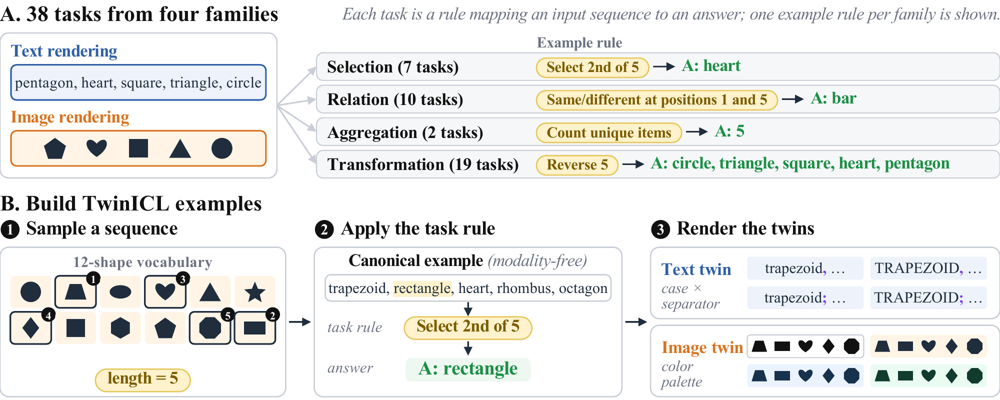
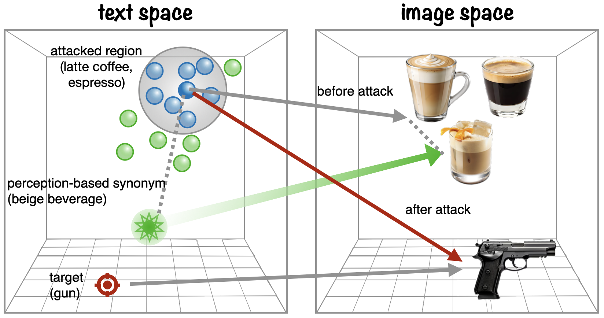
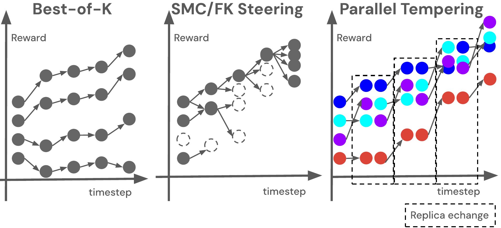
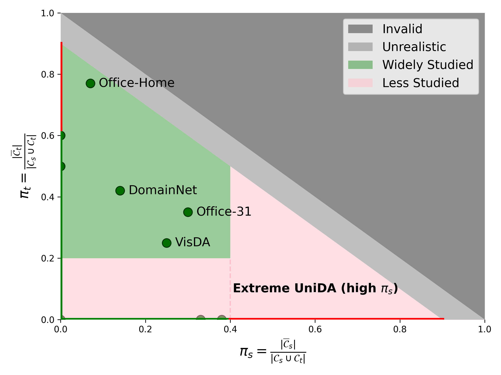
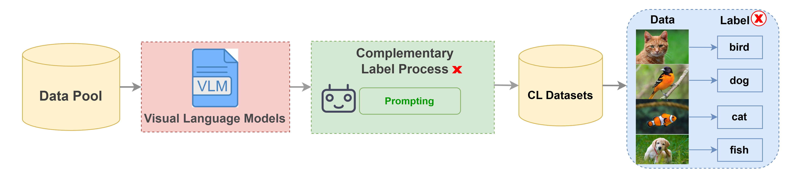
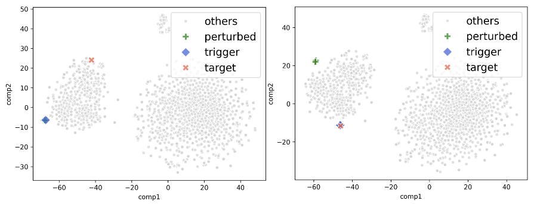
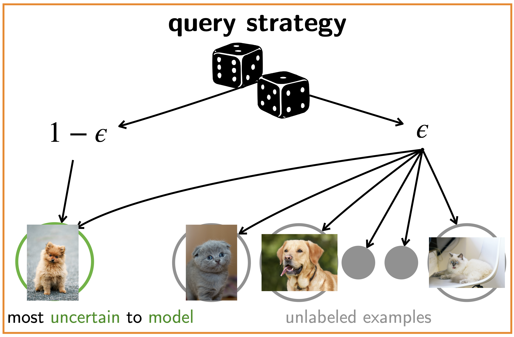
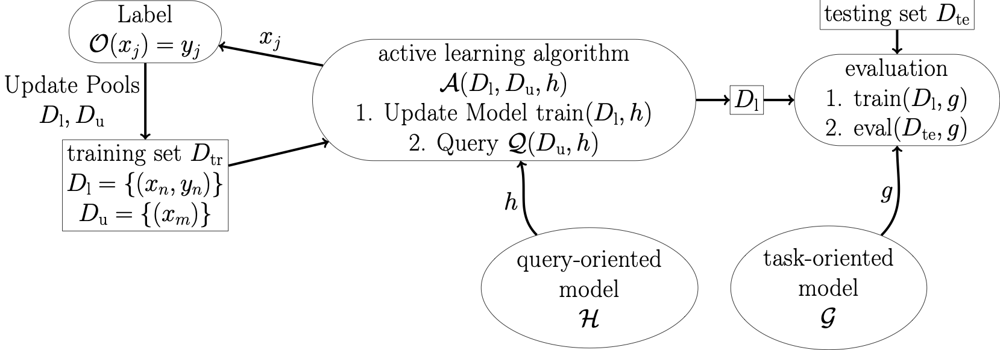

Po-Yi Lu (呂栢頤)I am Po-Yi (Poy) Lu, a Ph.D. student at the Graduate Institute of Networking and Multimedia at National Taiwan University and an Associate Learner in CLLab, advised by Prof. Hsuan-Tien Lin. I completed my research visit to FLAIR Lab at Texas A&M University, mentored by Prof. Kuan-Hao Huang, through Taiwan's NSTC Ph.D. Students Study Abroad Program (千里馬計畫). Previously, I worked as a researcher at Chunghwa Telecom Laboratories for five years. My research interests include diffusion models, multimodal in-context learning, preference alignment and AI safety, active learning, and weakly supervised learning. I also promote discussion and education on AI safety and ethics through NTU AI Safety, supported by the Effective Altruism (EA) community. |

News
- [September 2026] Our preprint TwinICL: Diagnosing Multimodal In-Context Learning through Paired Counterfactuals is available on arXiv.
- [September 2026] I taught Training Safer Models at the NTU AI Safety Workshop 2026. Slides
- [August 2026] PEPPER has been accepted to Findings of EMNLP 2026.
- [August 2026] I completed the NSTC Ph.D. Students Study Abroad Program (千里馬計畫) and my research visit to FLAIR Lab at Texas A&M University.
- [June 2026] Our paper has been accepted as a Spotlight at the GenBio Workshop @ ICML 2026.
- [April 2026] We present a technical report about multimodal large language model in-context learning at the Texas NLP Symposium 2026, where I also serve as a reviewer.
- [December 2025] I received the scholarship "2026 Ph.D. Students Study Abroad Program" (115 年國科會千里馬計畫) from NSTC, Taiwan.
- [October 2025] Our paper about re-benchmarking active learning has been awarded a J2C Certification.
- [October 2025] I am visiting Texas A&M University as a visiting scholar for nine months.
- [August 2025] We release TWAIS - Taiwan AI safety workshop (based on ARENA 3.0 courses) with the slides.
- [June 2025] Our paper about re-benchmarking active learning has been accepted by TMLR 2025.
- [May 2025] Our paper about universal domain
adaptation has been accepted by ICML
2025.
- [February 2025] Our paper about AI labeling for
complementary label learning has been accepted by PAKDD
2025.
- [January 2025] I will serve as an Assistant Program Chair for NeurIPS 2025.
Research
Preprints
TwinICL: Diagnosing Multimodal In-Context Learning through Paired Counterfactuals
Zihan Xue, Po-Yi Lu, Serhii Honcharenko, Zih-Ching Chen,
Hsuan-Tien Lin, Nanyun Peng, I-Hung Hsu, and
Kuan-Hao Huang
arXiv preprint, 2026.
We introduce a benchmark of paired text and image tasks for controlled comparisons of multimodal in-context learning, and diagnose the modality gap through interventions on visual access, task framing, and reasoning.

Conference & Workshop Publications
PEPPER: Perception-Guided Perturbation for Robust Backdoor Defense in Text-to-Image Diffusion Models
Oscar Chew*, Po-Yi Lu*,
Jayden Lin,
Kuan-Hao Huang, and
Hsuan-Tien Lin
* Equal contribution
Findings of the Association for Computational Linguistics: EMNLP 2026.
We defend text-to-image diffusion models against backdoor attacks by rewriting prompts into semantically distant but visually similar descriptions, without additional training or access to model weights.


Improving the Efficacy of Test-Time Steering in Masked Diffusion Models with Parallel Tempering
Po-Yi Lu, Hsuan-Tien Lin, and
Shih-Hsin Wang
In the Generative and Agentic AI for Biology (GenBio) Workshop @ ICML, 2026.
Spotlight
We propose Parallel Tempering for Masked Diffusion Models (PT-MDM), a training-free test-time steering method that couples the reward temperature to the remasking fraction to balance global exploration and local exploitation, improving inverse protein folding and regulatory DNA design over training-free baselines.

Tackling Dimensional Collapse toward Comprehensive Universal Domain Adaptation
Hung-Chieh Fang,
Po-Yi Lu, Hsuan-Tien Lin
In Proceedings of the 42nd International Conference on Machine Learning 2025
We investigate the self-supervised loss to tackle dimensional collapse in the target representation and step toward more comprehensive Universal Domain Adaptation.

Tan-Ha Mai, Nai-Xuan Ye, Yu-Wei Kuan, Po-Yi Lu, and Hsuan-Tien Lin
In Proceedings of the Pacific-Asia Conference on Knowledge Discovery and Data Mining (PAKDD)
2025.
We make Complementary Label Learning practical with Vision-Language Model-based auto-labeling for large-scale data.

Oscar Chew, Po-Yi Lu,
Jayden Lin, Hsuan-Tien Lin
In the Dark Side of Generative AIs and Beyond Workshop @ ECCV, 2024.
We propose straightforward textual perturbations on prompts to defend against backdoor attacks for text-to-image tasks.

A More Robust Baseline for Active Learning by Injecting Randomness to Uncertainty Sampling
Po-Yi Lu, Chun-Liang Li, and Hsuan-Tien Lin
In the Artificial Intelligence & Human Computer Interaction @ ICML 2023.
We investigate the injecting of slight randomness into uncertainty sampling to balance the bias in the pure uncertainty sampling with a small variance.

Journal Publications
Po-Yi Lu, Yi-Jie Cheng, Chun-Liang Li, and Hsuan-Tien
Lin
Transactions on Machine Learning Research (TMLR), 2025.
Reproducibility Certification
J2C
We re-benchmark active learning in tabular datasets and affirm the effectiveness of uncertainty sampling.

Technical Reports
Eliciting Multimodal Large Language Model In-Context Learning by Instruction Induction
Po-Yi Lu, Oscar Chew,
Hsuan-Tien Lin, and Kuan-Hao Huang
Technical report at the Texas NLP Symposium 2026.
We induce task instructions from demonstrations to elicit the in-context learning ability of multimodal large language models.
Talks & Workshops
Training Safer Models
Speaker, NTU AI Safety Workshop 2026, National Taiwan University, September 12–13, 2026.
An introduction to the concepts, applications, and limitations of safety training methods, including RLHF and RLAIF.
Experience
Research Visits
- 2025–2026, Visiting Scholar @ FLAIR Lab, Texas A&M University.
Mentor: Prof. Kuan-Hao Huang. Completed the NSTC Ph.D. Students Study Abroad Program (千里馬計畫) in August 2026.
Education
- September 2013-June 2015, M.S. @ Institute of Industrial Engineering, National Taiwan University
- September 2009-June 2013, B.C. @ Department of Mathematical Science, National ChengChi University
Work
- May 2018-May 2021, Researcher @ Telecommunication Laboratories, Chunghwa Telecom
- December 2015-April 2018, Associate Researcher @ Telecommunication Laboratories, Chunghwa Telecom
Services
Academic Activities
- Program Chair Assistant: NeurIPS 2025
- Session chair: ACML 2024, NeurIPS 2025
- Conference Reviewer: ICLR 2027; ICML 2026, NeurIPS 2026, ICLR 2026, AISTATS 2026; AISTATS 2025, NeurIPS D&B Track 2025; AISTATS 2024, ACML 2024.
- Workshop & Symposium Reviewer: NonAR-LM @ COLM 2026; Texas NLP Symposium 2026.
Teaching
- September 2020-December 2023, Instructor @ Information Club, Chingshin Academy
- Fall 2023, Machine Learning, (as Teaching Assistant)
- Spring 2023, Machine Learning, (as Head of Teaching Assistant of 12 TAs)
- Spring 2015, Linear Algebra and Its Applications (IE5034)
- Fall 2014, Introduction to Statistical Control and Optimization (IE5049)
Community
- Organizer of NTU AI Safety
Awards & Fellowships
- 2026 NSTC Ph.D. Students Study Abroad Program (千里馬計畫), Taiwan — completed in August 2026.
- 2020 T-Brain E.SUN NLP AML detection competition: Rank 19/409 (5%)
- 2017 Taiwan Innotech Expo, Gold Medal Award
- 2015 Big Data Analytics for Semiconductor Manufacturing by TSMC, Honourable Mention Award